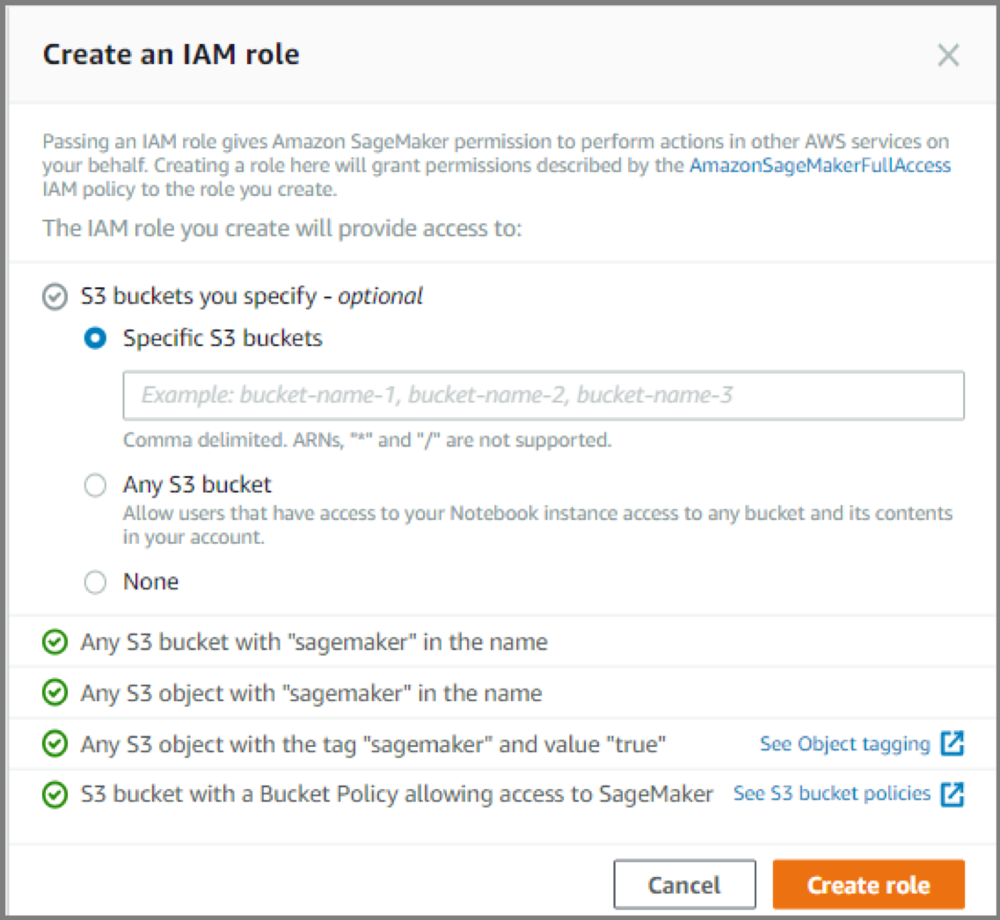
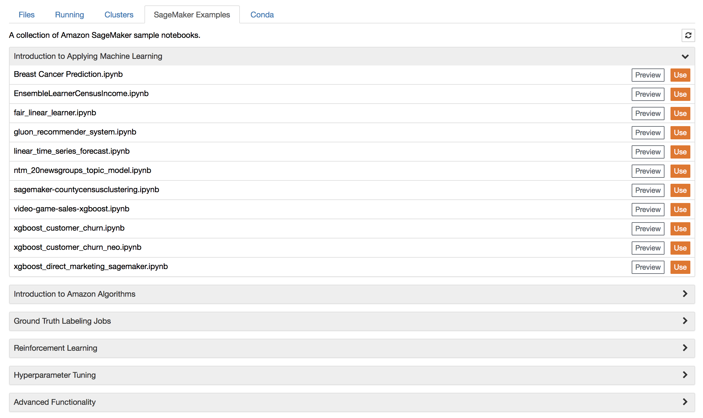

Lab 1: SageMaker Notebook Creation
Step 1
Introduction
The following lab will create the necessary S3 bucket and SageMaker notebook instance that will be used throughout the workshop.
Setting Things Up
This lab assumes you have already been set up with an AWS user account with IAM permissions that allow SageMaker and related resources to be accessed and used. If not, contact your company’s AWS administrator and have them create the user account and permissions for you.
Create an S3 Bucket
In exercises where you create a model training job, you save the following in an Amazon S3 bucket:- The model training data
- Model artifacts, which Amazon SageMaker generates during model training
You can store the training data and artifacts in a single bucket or in two separate buckets. For exercises in this guide, one bucket is sufficient. You can use existing buckets or create new ones.
Follow the instructions in Create a Bucket in the Amazon Simple Storage Service Console User Guide. Include sagemaker in the bucket name; for example, sagemaker-datetime.
Note: Make sure to create your bucket in either us-east-1 (N. Virginia)
Step 2
To create an Amazon SageMaker notebook instance
- Open the Amazon SageMaker console at https://console.aws.amazon.com/sagemaker/home?region=us-east-1
- Choose Notebook instances, then choose Create notebook instance.
- On the Create notebook instance page, provide the following information:
- For Notebook instance name, type
SageMakerWorkshop. - For Instance type, choose
ml.t2.medium. - For IAM role, create an IAM role.
- Choose Create a new role.
 - (Optional) If you want to use S3 buckets other than the one you created in Step 1 of this tutorial to store your input data and output, choose them.
In Step 1 of this tutorial, you created an S3 bucket with
sagemakerin its name. This IAM role automatically has permissions to use that bucket. TheAmazonSageMakerFullAccesspolicy, which Amazon SageMaker attaches to the role, gives the role those permissions.The bucket that you created in Step 1 is sufficient for the model training exercise in Getting Started. However, as you explore Amazon SageMaker, you might want to access other S3 buckets from your notebook instance. Give Amazon SageMaker permissions to access those buckets.
To access more S3 buckets from your Amazon SageMaker notebook instance
- If you're not concerned about users in your AWS account accessing your data, choose Any S3 bucket
- If your account has sensitive data (such as Human Resources information), restrict access by choosing Specific S3 buckets. You can update the permissions policy attached to the role you are creating later.
- To explicitly control access, Restrict access by choosing None. use bucket and object names and tags as supported by the
AmazonSageMakerFullAccesspolicy. For more information, see Using the AWS Managed Permission Policy (AmazonSageMakerFullAccess) for an Execution Role.
- Choose Create role.
Amazon SageMaker creates an IAM role named
AmazonSageMaker-ExecutionRole-YYYYMMDDTHHmmSS. For example,AmazonSageMaker-ExecutionRole-20171125T090800.To see the policies that are attached to the role, use the IAM console.
Open the IAM console at https://console.aws.amazon.com/iam/.The following policies are attached to the role:
- A trust policy that allows Amazon SageMaker to assume the role.
- The
AmazonSageMakerFullAccessAWS managed policy. - If you specified access to additional S3 bucket(s) when creating this role, the customer managed policy attached to the role. The name of the customer managed policy is
AmazonSageMaker-ExecutionPolicy-YYYYMMDDTHHmmSS.
- For Notebook instance name, type
- Choose Create notebook instance.
In a few minutes, Amazon SageMaker launches an ML compute instance—in this case, a notebook instance—and attaches an ML storage volume to it. The notebook instance has a preconfigured Jupyter notebook server and a set of Anaconda libraries. For more information, see the CreateNotebookInstance API. - When the status of the notebook instance is
InService, choose Open next to its name to open the Juypter dashboard. - A new tab that contains sample notebooks. To use a sample notebook, on the "Sagemaker Examples" tab, choose the
sample notebookyou would like to explore. For information about the sample notebooks, see the Amazon SageMaker GitHub repository. - The kernels for Jupyter, including those that provide support for Python 2 and 3, Apache MXNet, TensorFlow, and PySpark. To choose a kernel for your notebook instance, use the New menu.
The dashboard provides access to: